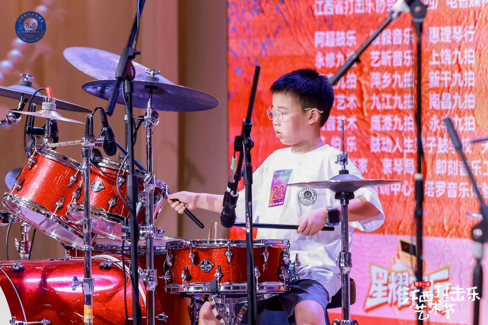
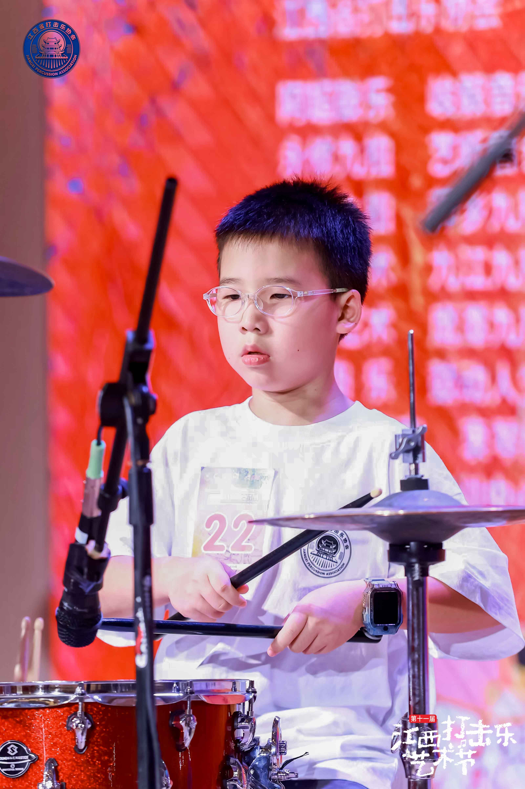
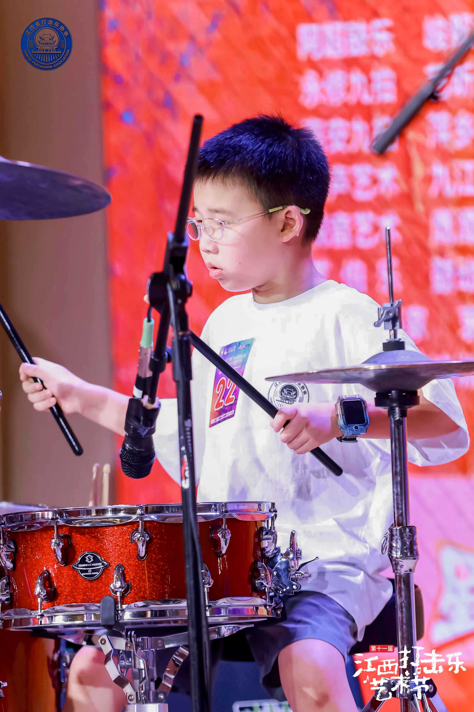

《Baked Potato》这首曲子带有明显的 Funky 和 Pop-Rock 风格，难点在于保持律动感的同时，还要处理好底鼓（Kick）和军鼓（Snare）的错位配合。扬扬的节奏把控非常出色，整首曲子速度保持得很均匀，没有出现初学者常见的“越打越快（赶拍）”或“过门后拖拍”的问题。这种稳定的内心节拍感是他非常宝贵的天赋和苦练的成果。
在江西省打击乐比赛这样的大型专业舞台上，面对台下的评委和观众，很多小选手会怯场或眼神游移。但扬扬的眼神非常专注，全程紧盯谱面或自己的打击区域，完全沉浸在演奏中。这种“不受外界干扰”的心理素质，对于乐手来说尤为重要。
为了让他的架子鼓水平向更专业的高度迈进，未来可以在以下两个方面加强练习：